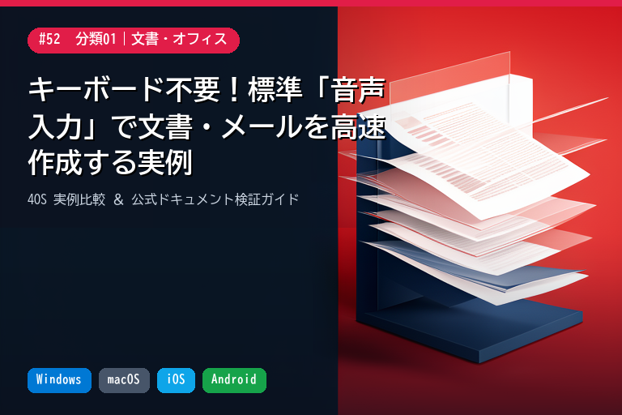

#52｜分類01: 文書作成・オフィス業務・事務作業 2026-11-24

キーボード不要！標準「音声入力」で文書・メールを高速作成する実例｜Windows・macOS・iOS・Android
「会議の議事録を急いでまとめたい」「長文のメールを打つのが億劫で、つい後回しにしてしまう……」そんな悩みをお持ちではありませんか？
実は、現代のOSには非常に高度な「音声入力」機能が標準搭載されています。キーボードを叩く代わりに「話すだけ」でテキストを入力する技術は、単なる時短テクニックではなく、思考のスピードをそのまま文章に落とし込める強力な武器になります。
この記事では、Windows、macOS、iOS、Androidの4つの主要OSにおいて、標準機能だけで音声入力を使いこなすための具体的な手順と、初心者が陥りやすいトラブルの解決策を徹底解説します。
4OS比較早見表
まずは、各OSにおける音声入力の基本仕様を比較してみましょう。
| OS | 主な操作方法 | 特徴・強み | 標準機能の制限事項 |
|---|---|---|---|
| Windows 11 | Ctrl + Win + H |
EdgeやOfficeとの親和性が高い。 | 常時オン設定はセキュリティ上非推奨。 |
| macOS | Command + Fn + F5 |
高い日本語認識精度とスムーズな操作感。 | 「プレビュー」アプリでのPDF直接編集不可。 |
| iOS | キーボードの「Aa」アイコン | どこでも手軽に起動でき、移動中に便利。 | アプリ切り替えでセッションが切断される。 |
| Android | キーボードのマイクボタン | Googleスピーチによる強力な認識能力。 | ドライブアプリ内での直接作成は非対応。 |
1. Windows 11 での実例手順
Windows 11では、Microsoft EdgeやWordなどの主要アプリケーションと連携した音声入力が非常にスムーズです。
基本の手順
- EdgeブラウザまたはOfficeアプリ（Word等）を起動します。
- キーボードの
Ctrl+Win+Hを同時に押すと、「音声入力」パネルが表示されます。 - マイクアイコンをタップし、話しかけ始めます。
※Wordアプリ内では、リボンの「ホーム」タブにある「編集グループ」内の「音声入力」ボタン（または Alt + Shift + F10）からも起動可能ですが、Edgeのショートカットの方が汎用性が高くおすすめです。
標準機能の制限事項
- 常時オン設定の不可: セキュリティポリシーの関係上、「Windows Hello」認証なしで常にマイクをオンにする設定は標準では非対応です。必要な時にショートカットで呼び出す運用が基本となります。
- IMEの自動切り替え: 話した内容がそのまま出力されますが、全角/半角やひらがな/カタカナのモード自体を音声で切り替える機能はないため、入力後に微調整が必要になる場合があります。
よくあるトラブルと解決法
- 「音声入力できません（マイクが見つかりません）」エラーが出る
- 原因・対策: プライバシー設定で許可がオフになっている可能性があります。
設定 > プライバシーとセキュリティ > マイコーフォンでEdgeやMicrosoftコレクションへのアクセスを許可してください。また、ブラウザのアドレスバー右側のロックアイコンからサイト権限も確認しましょう。
- 原因・対策: プライバシー設定で許可がオフになっている可能性があります。
- 変換精度が悪い（人名や専門用語が誤認識される）
- 原因・対策: 標準モデルでは固有名詞に弱い傾向があります。精度向上のためには、外部ツール（DeepL等）での校正を併用するか、ブラウザ拡張機能の「Google スピーチ」などを検討するのが現実的です。
- 誤変換が多発し文書が汚れる
- 原因・対策: 背景ノイズや話速が速すぎる場合に起こります。「音声入力」パネル内の「停止ボタン（赤）」をこまめに押し、区切りを意識しましょう。また、
Ctrl + Zで直前の誤変換を巻き戻す操作をセットで覚えるのがコツです。
- 原因・対策: 背景ノイズや話速が速すぎる場合に起こります。「音声入力」パネル内の「停止ボタン（赤）」をこまめに押し、区切りを意識しましょう。また、
2. macOS での実例手順
macOSは、Appleの高度な自然言語処理により非常に精度の高い音声入力を提供しています。
基本の手順
- Safari、Pages、Mailアプリなど、任意のテキスト編集画面を開きます。
Command+Fn+F5を押して「音声入力」パネルを起動します（またはメニューバーから選択）。- マイクアイコンをタップし、発話を開始します。
※事前にシステム設定で言語が「日本語」に選択されていることを確認してください。
標準機能の制限事項
- PDF編集への非対応: 「プレビュー」アプリで開いたPDFはテキスト選択不可なため、音声入力による直接書き込みはできません。
- ハードウェアの違い: 旧モデルや特定のキーボードでは
Fnキーの挙動が異なる場合があるため、メニューバーからの起動も併用してください。
よくあるトラブルと解決法
- 「音声入力」パネルが開かない（灰色になっている）
- 原因・対策: システム設定 > プライバシーとセキュリティ > マイクロフォン で、対象アプリの許可がOFFになっていないか確認してください。また、「システム設定 > キーボード > テキスト入力を拡張する」が有効かもチェックポイントです。
- 「日本語」ではなく「英語（米国）」で出力される
- 原因・対策: パネル内の言語選択アイコンをクリックし「日本語」に切り替えてください。また、キーボードのIMEが半角英数になっていると精度が落ちるため、全角モードでの入力を推奨します。
- 「プレビュー」アプリでPDFに直接書き込めない
- 原因・対策: macOS標準では非対応です。代替案として、「ファイル > 新規作成 > テキスト文書」で音声入力を行い、完成したテキストをコピー＆ペーストするか、Word for Macを使用して編集後にPDFへ書き出す方法をとります。
3. iOS（iPhone / iPad）での実例手順
モバイル環境では、移動中や片手が塞っている状況での音声入力が非常に強力です。
基本の手順
- Mailアプリやメモアプリを開き、テキストエリアをタップします。
- キーボード右下の 「Aa」アイコン をタップし、「音声入力」を選択します。
- マイクボタンを押して発話します。
※外部キーボード接続時は Shift + Fn などで起動できる設定もありますが、基本は「Aa」メニューからの操作が最も確実です。
標準機能の制限事項
- アプリ間移動の切断: 文書作成中に他のアプリへ切り替えると、音声入力セッションが強制終了されます。
- Safariでの制約: Safariの一部画面ではショートカット経由の起動が非対応な場合があります（外部キーボード接続時のみ可能な場合あり）。
よくあるトラブルと解決法
- 「Aa」アイコンが表示されない / 「音声入力」ボタンがない
- 原因・対策: キーボードレイアウトの設定ミスが考えられます。
設定 > 一般 > キーボード > 新しいキーボードを追加で「英語キーボード」を登録し、切り替えてから再度試すことで解決する場合があります。
- 原因・対策: キーボードレイアウトの設定ミスが考えられます。
- Safariで直接使えない
- 原因・対策: バージョンによりパスが存在しないことがあります。この場合は「メモアプリ」で入力してコピー＆ペーストするか、「ショートカット」アプリを使ってWebページへの書き込みを自動化する工程を挟みます。
- 変換精度が低い
- 原因・対策:
設定 > 一般 > キーボード > 修正を学習させるをオンにし、誤認識した単語を正しく入力し直すことで、徐々に辞書を学習させることができます。
- 原因・対策:
4. Android（Pixel / Galaxy など）での実例手順
AndroidではGoogleの強力な音声認識エンジンを活用できます。
基本の手順
- Gmail、Docs、メモアプリなどを開き、カーソルを合わせます。
- キーボード右下の マイクアイコン をタップ（または機種により
Shift+Enter等のショートカット）して発話します。
※Googleキーボード（Gboard）がデフォルトの場合、非常にスムーズに動作します。
標準機能の制限事項
- Google ドライブ内での直接作成: ドライブアプリ内で直接音声入力を介して新規ドキュメントを作成することは標準では非対応です。ChromeブラウザやDocsアプリを立ち上げてから入力してください。
- サードパーティ製キーボード: 独自キーボードを使用している場合、ショートカットが競合して動作しないことがあります。
よくあるトラブルと解決法
- 「音声入力」ボタンが反応しない / エラーが出る
- 原因・対策: Gboardの設定で「Google スピーチ」が無効になっている可能性があります。
設定 > システム > 言語と入力 > キーボード > Googleキーボードを開き、「音声入力を有効にする」をオンにしてください。
- 原因・対策: Gboardの設定で「Google スピーチ」が無効になっている可能性があります。
- 機種名（Pixel vs Galaxy）によるメニュー階層の違い
- 原因・対策: Samsung Galaxyなどでは独自アプリの設定に分散していることがあります。「Google ドライブでドキュメントをスキャンする」等の機能はGoogleアプリ固有のものであり、端末本体の音声入力とは別物であることを意識して操作しましょう。
- 変換精度が悪い（方言・訛りが認識されない）
- 原因・対策: Android標準モデルでは特定のアクセントに対応していない場合があります。「Google スピーチ」の設定で「言語と地域」を微調整するか、複雑な文章はテキストエディタでの事前入力を推奨します。
よくあるトラブルと解決法（共通チェックリスト）
どのOSでも共通して遭遇しやすい問題の解決策をまとめました。
- マイクの権限エラー: OSの設定画面で「プライバシー」項目を確認し、使用したいアプリにマイクへのアクセス許可を与えているか確認してください。
- 周囲のノイズ: 換気扇やエアコンの音が入ると精度が劇的に低下します。可能な限り静かな環境で行うか、外付けのマイクを使用することを検討してください。
- 句読点の自動挿入: 標準機能では「句読点を入れて」と言うだけでは反応しない場合があります。入力後に手動で修正するか、OS独自の補助機能（自動句読点など）が有効になっているか確認しましょう。
まとめ：快適なマルチOS環境を作るポイント
音声入力をマスターすれば、事務作業のスピードは劇的に向上します。しかし、音声入力だけで完璧な文書を仕上げるには、いくつかの「周辺環境」を整えることが成功の鍵となります。
より快適な執筆環境を作るための推奨アイテム：
* Office互換ソフト: 音声で下書きを作成した後、体裁を整えるためにWordやGoogleドキュメントなどの高機能なエディタを併用しましょう。
* PDF編集ソフト: macOSの制限を補うため、音声入力したテキストをスムーズに配置できるPDF編集ツールを用意しておくと便利です。
* 外付けキーボード・大型モニター: 「音声で下書きを作り、キーボードで微調整する」というワークフローが最も効率的です。大きな画面があれば、音声入力パネルと文書のプレビューを同時に確認でき、修正作業が格段に楽になります。
まずは今日から、メールの返信やメモの作成に「話しかけるだけ」の手法を取り入れてみてください。あなたのデスクワークは、もっと自由でクリエイティブなものに変わるはずです。
参考文献・公式ドキュメント（一次情報ソース）
本記事の手順・仕様は以下の各OSおよびツールの公式ドキュメントに基づいています。OSアップデートによりメニュー名称や挙動が変わる場合があるため、最新仕様の確認にもご活用ください。
- [Windows] Microsoft Edge 印刷・PDF関連ポリシー公式ドキュメント | Microsoft Learn
- [macOS] Macの「プレビュー」でPDFを結合する - Apple サポート (日本)
- [macOS] Macの「プレビュー」でPDFのサイズを減らす - Apple サポート (日本)
- [iOS] iPhoneの「ファイル」でファイルやフォルダを変更する - Apple サポート (日本)
- [iOS] ショートカット ユーザガイド - Apple サポート (日本)
- [Android] Google ドライブでドキュメントをスキャンする（PDF保存） - Google ドライブ ヘルプ
- [Android] Chrome から印刷（PDF として保存・ページ範囲指定） - Google Chrome ヘルプ